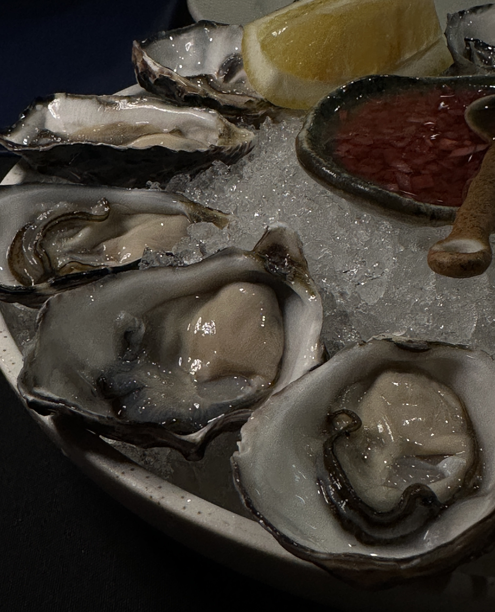
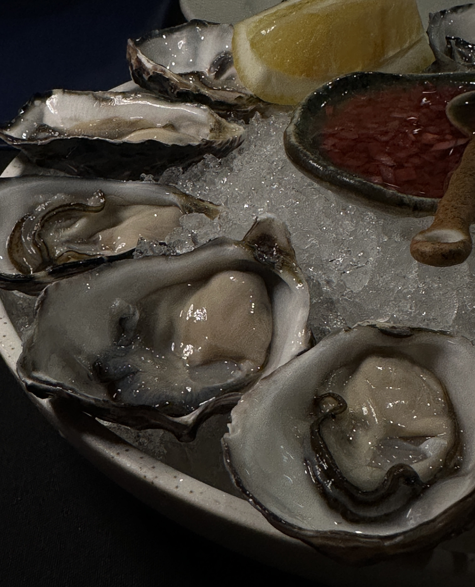
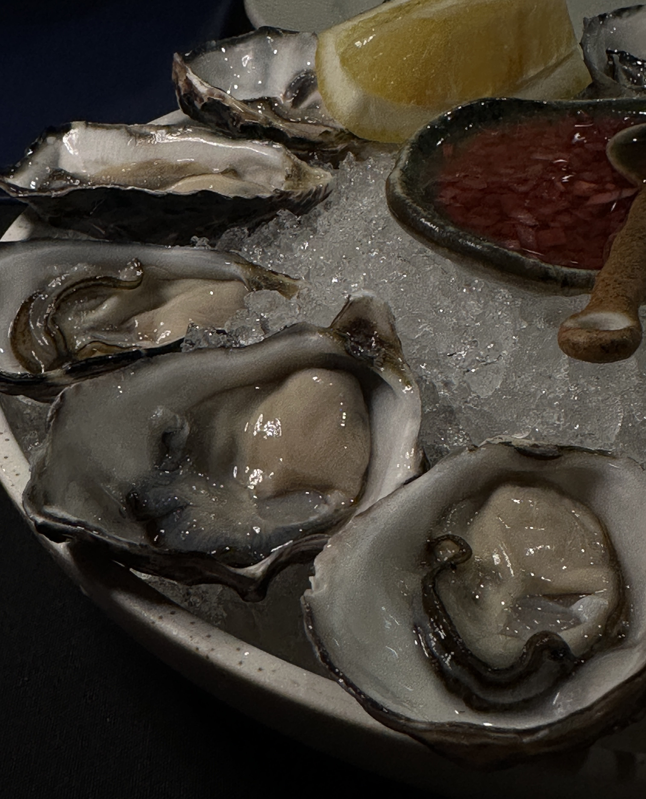
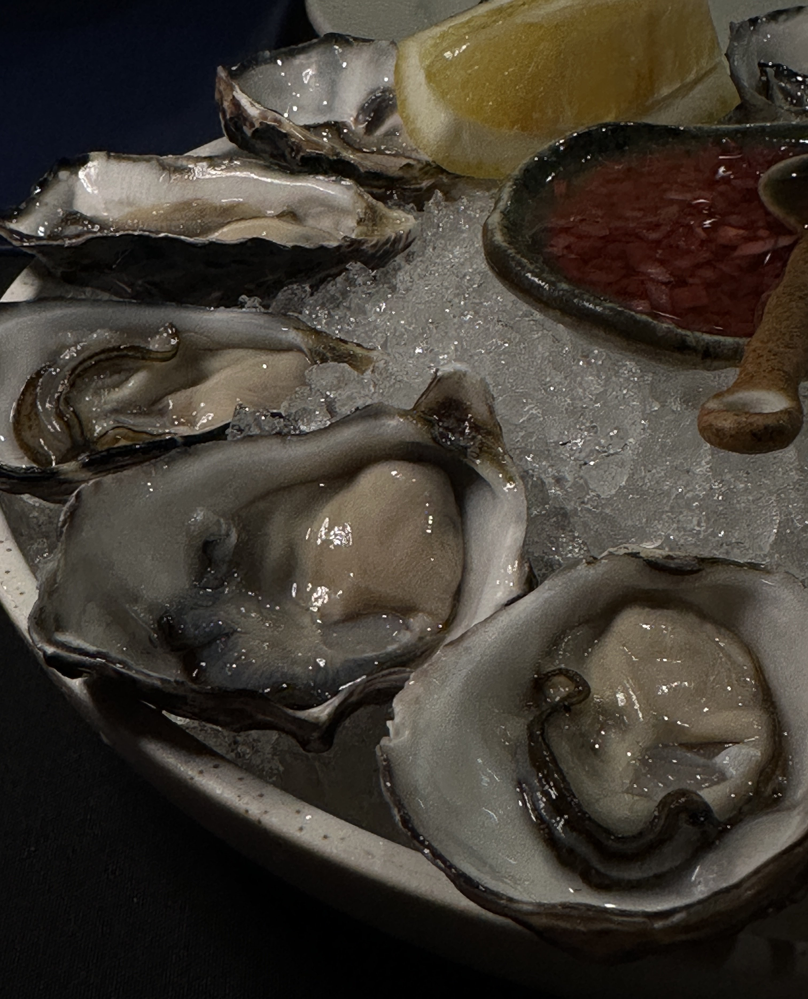

My life in focus.
Melbourne Based.


 


 


Hey! I'm Reuben, a passionate data science student based in Melbourne and currently in my third year at the University of Melbourne.
I started my academic journey in engineering but quickly realized it wasn’t for me. Around the same time, I developed a deep interest in statistics,
sparked by videos by Veritasium. The first video I watched, "Why Statistics is So Powerful," piqued my curiosity,
and my interest only grew after watching "How Data Science is Changing the World." While my initial reaction was confusion,
this lack of understanding only fueled my desire to learn more.
Over the first university break, I taught myself Python, which I thoroughly enjoyed. My interest in statistics and enjoyment in coding naturally led me to pursue
data science. Along the way, I've built a diverse skill set, including proficiency in Python (and libraries like pandas, numpy, and scikit-learn), R, C, and SQL.
I also self-taught HTML and CSS during my second-year break, adding web development to my toolbelt.
Outside of my academic pursuits, I’ve spent three years working in sales, which has honed my interpersonal skills and given me a solid foundation in client
interaction. My journey has been shaped by curiosity, hands-on learning, and a drive to continuously expand my knowledge.
Let Connect!